Why would I play this dogshit champ?
Tired of the 200-year club with long ass abilities descriptions? League has (way too) many dashes nowadays? Feeling like a little bit of old school mechanics? I'm here to bring you just what you want - The Dyr.
If you ever watched Synapse or any other LOL content before, you must know the man, the myth, the legend, the breacher, the griefer, the El Truco - the one and only Trick2g. Learn how to play the Dyr, experience the struggles, talk shit, eat shit and sometime pop off like that bald headed losing hairline motherfucker. How? Just go through this page and you'll be come the next generation of the GOD DYR.
(I won't be covering jungle Dyr since he's pretty much braindead power farming in most games.)
Not interested? Hit the button below, play your boring, tilted ranked games and get the fuck out of my lane, baby!

ABILITIES
-
PassiveMonkey's Agility
Udyr gains stacking Move Speed and Attack Speed after using an Ability. Udyr has four basic Abilities that he may use to swap between Stances. Changing Stances immediately ends both the passive and the on-hit portion of the previous Stance.
-
 QTiger Stance
QTiger StanceActivation - Udyr's Attack Speed is increased for a few seconds.
Persistent Effect - Udyr's first attack and every third attack after will deal a high amount of damage over 2 seconds.
-
 WTurtle Stance
WTurtle StanceActivation - Udyr gains a temporary shield that absorbs damage.
Persistent Effect - Udyr's first attack and every third attack after heals him for 2.5% of his maximum health.
-
 EBear Stance
EBear StanceActivation - Udyr increases Move Speed for a short duration.
Persistent Effect - Udyr's basic attacks stun his target for 1 second. This effect cannot occur on the same target for several seconds.
-
 RPhoenix Stance
RPhoenix StanceActivation - Udyr unleashes pulsing waves of fire, dealing damage to nearby enemies.
Persistent Effect - Udyr's first attack and every third attack after engulfs enemies in front of him with flames.
For now, just know that Udyr has the most dogshit kit in the game and the order in which you upgrade your skills doesnt matter. Level up anything youre comfortable with, but try to have some points in Q whenever you can.
ITEMS
(The following items are the best for the Dyr, sorted based on their value. In most cases, these items make up the ideal Udyr build.)


Honorable mentions: Thornail, Spirit Visage(I know what I said but its a must when you have enchanter suppots like Yuumi), Mejai, BOTRK, Lich Bane, Ravenous Hydra, Wit's End.
MATCH UPS
Push The Lane

 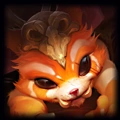
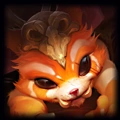


 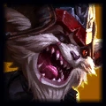
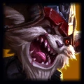
 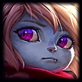
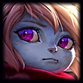


 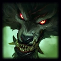
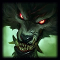

Proxy


 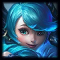
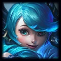


 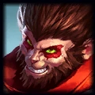
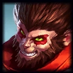
Divine Rush

 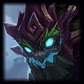
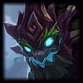


Frozen Rush
Stars Wars: Canceled Before Episode IV: A New Hope